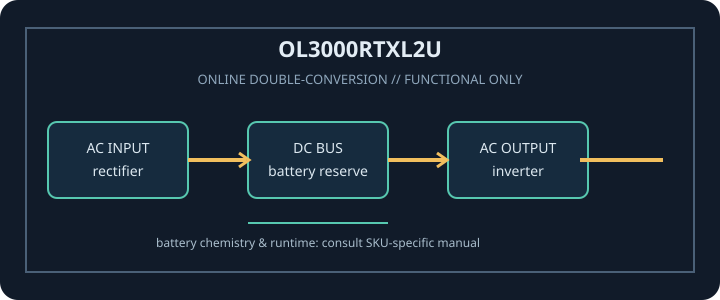

[ ONLINE DOUBLE-CONVERSION UPS // IDENTIFIED MODEL ]
Smart App Online OL3000RTXL2U
CyberPower OL3000RTXL2U: 3000 VA / 2700 W online double-conversion UPS. This record covers only the identified SKU and regional configuration; match complete model code and nameplate to manufacturer documentation.

ARCHIVAL IDENTIFICATION: Record full SKU, region, serial/date code, firmware/revision, installed options, battery identifier and observed condition. Similar product names do not prove electrical compatibility.
Model specifications
| Exact model / topology | CyberPower OL3000RTXL2U; Online double-conversion (pure sine-wave output). |
|---|---|
| Rated output | 3000 VA / 2700 W. VA and W limits are separate constraints; never exceed either. |
| Input / output voltage | Input: 120 V nominal North American model; configurable output must be set and verified for connected equipment. Output: Manufacturer-configurable 100 / 110 / 115 / 120 / 125 V AC; available watts depend on the selected output voltage, consult exact model data. |
| Input connection | NEMA L5-30P input plug (30 A locking). |
| Output receptacles | 6 × NEMA 5-20R plus 1 × NEMA L5-30R output receptacles. |
| Battery chemistry / service | Internal sealed lead-acid (VRLA) battery pack; model-approved replacement and external battery-module compatibility are defined by CyberPower documentation. |
| Runtime | Consult the OL3000RTXL2U manufacturer runtime graph for load-specific estimates. Runtime changes with output voltage, load watts, battery age/condition, charge and environment; external battery modules extend runtime only when approved. |
| Transfer behavior | Online inverter continuously regenerates output with no utility-to-inverter transfer interval in normal operation. Bypass/fault behavior is specified in the exact model manual. |
| Communications / compatibility | USB and serial monitoring, EPO/relay interfaces, and optional supported network management card/software. Validate host, firmware, cable and card support. |
| Compatibility / safety | Requires a correctly wired 120 V, 30 A branch circuit with L5-30R receptacle for its L5-30P input. Verify output settings and every outlet/load rating; installation and circuit work should follow local code and qualified-person requirements. Read the exact revision of the manufacturer manual before connection, service or battery replacement. |
Service and compatibility notes
- Measure and record connected watts and source voltage; runtime is not guaranteed for an aged or untested battery.
- Do not open energized mains equipment. Never defeat protective earth, overload an outlet, use damaged equipment, or substitute an unapproved battery.
- For hardwired or high-current versions, qualified installation, rated branch protection and local electrical code apply.
- Confirm the complete model suffix, input wiring, output voltage, outlet map and manual revision against the unit nameplate before connecting equipment.
Manufacturer datasheet and manual sources
- CyberPower OL3000RTXL2U manufacturer product specificationsOfficial product ratings, output connectors and accessory documentation.
- CyberPower OL3000RTXL2U user manualModel-specific installation, runtime, battery and electrical safety information.